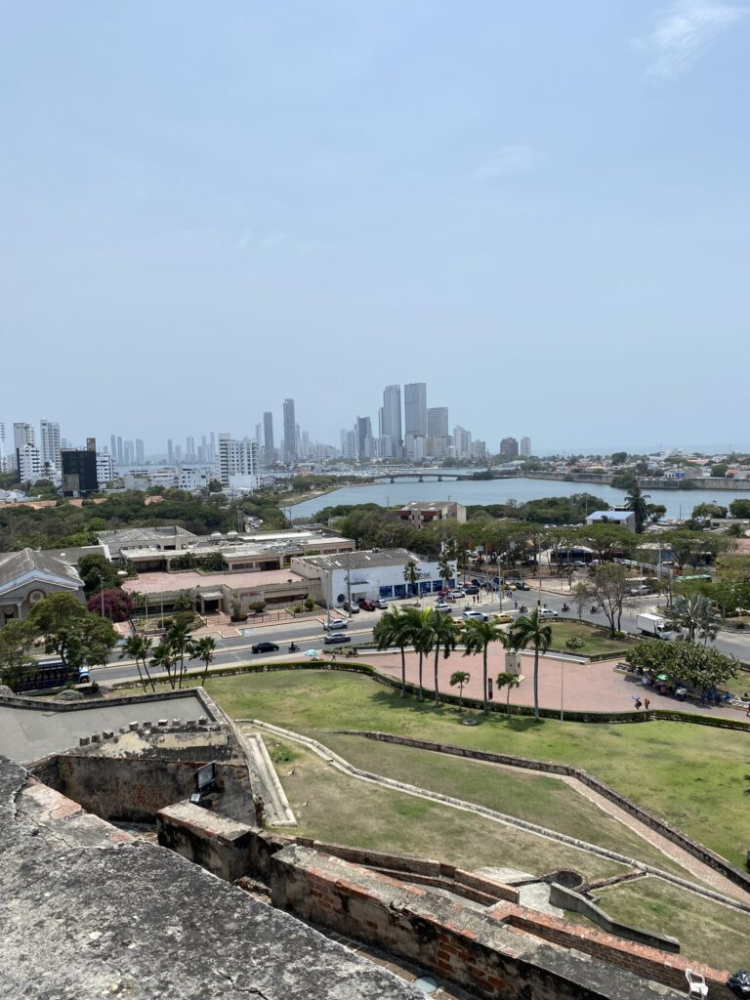

Het ontspannen leven kabbelt voort, richting de boot die het continent (voorgoed?) vaarwel zegt.
De Noord-Europeanen verzamelen zich voor een oudewetse techno-avond, waar het publiek van tegenwoordig zich helemaal in verliest. De plaatjes draaien in de jungle van El Rio, terwijl de schoenen uitgaan en de verdoving intreedt in de verzengende avondhitte. De tijd was al niet relevant en verraadt zich nu alleen door de ochtendzon die uiteindelijk onvermijdelijk doorbreekt.
De dagen die volgen centraliseren zich rond een kleine romance, en laten me nog langer verblijven op de inmiddels bekende stranden van Costeño en als nieuwe locatie Palomino. Dat betekent zand, pogingen tot surfen, ballen in de vorm van volley en pingpong en zwoele dansjes. Elke dag inwisselbaar voor de volgende en samen vormen ze een grote, kalmerende wolk in de herinneringenopslag genaamd de hersenen. Een dorpje onderweg kenmerkt zich door een boombox die letterlijk het hele dorp in audio hult en een gesprek in een winkeltje onmogelijk maakt. Ondenkbaar om daar te wonen.
Muziek in zand
Door de stijgende zeespiegel zie je het ooit zo machtige strand bijna met de dag tot een kleiner strookje transformeren. Onhandig voor de binnenlandse toeristen die zich in de heilige week in massale getalen hebben verzameld in deze regio. Dankzij wederom een heerlijk hostel buiten Palomino heb ik daar weinig last van. Het grote landgoed aan een rivier ligt op een kwartiertje lopen van een rustgevend privéstrand, via een paadje bewaakt door kaaimannen. Avonden vullen zich met salsalessen en groengeurende kampvuren, de ochtenden met yoga en meditatie. De dagen met lange strandwandelingen richting het dorp, de zonsondergangen met gin tonics en verliefde blikken.
Voor ik naar Cartagena vertrek, de laatste bestemming in Colombia, vind ik een magisch festivalletje aan Costeño beach waar ik maar blijf terugkeren. De acts wisselen af tussen podia op het strand, in de jungletuin en bij het zwembad. Dertien uur vliegt verbazingwekkend snel voorbij in een waas van Afrikaanse swing, raggaeton en elektronische muziek. De vibe gaat door met kampvuurtjes op het strand en voor ik het weet, zie ik nog één keer de zon opkomen op het continent Zuid-Amerika, waar zelfs de verse verf naar cocaïne ruikt.

Na een dagje uitbrakken pak ik de bus naar Cartagena, een prachtige stad met een koloniaal centrum. Omringd door een ouderwetse stadsmuur en bewaakt door een eeuwenoud kasteel is het centrale park de groene long, waar luiaards, papegaaien, apen en varanen door de bomen kruipen. Lopend of in paardrijstellen verplaatst de meute zich rond zonsondergang naar de kleurrijke wijk Getsimani, gekenmerkt door straatoptredens en goedkope cocktails. Overal is lekker eten te vinden, maar de genotzucht is van korte duur. Op de tweede dag in de stad krijg ik, hopelijk voor de laatste keer hier, een voedselvergiftiging. Genieten is anders, maar het went. Lichtelijk vol van het maagzuur en alle reizigersgesprekken vertrek ik richting de kabbelende zeilboot voor het laatste avontuur, waarna mijn ongecensureerde pen een eindoordeel zal vestigen over de meest bijzondere periode van mijn leven.